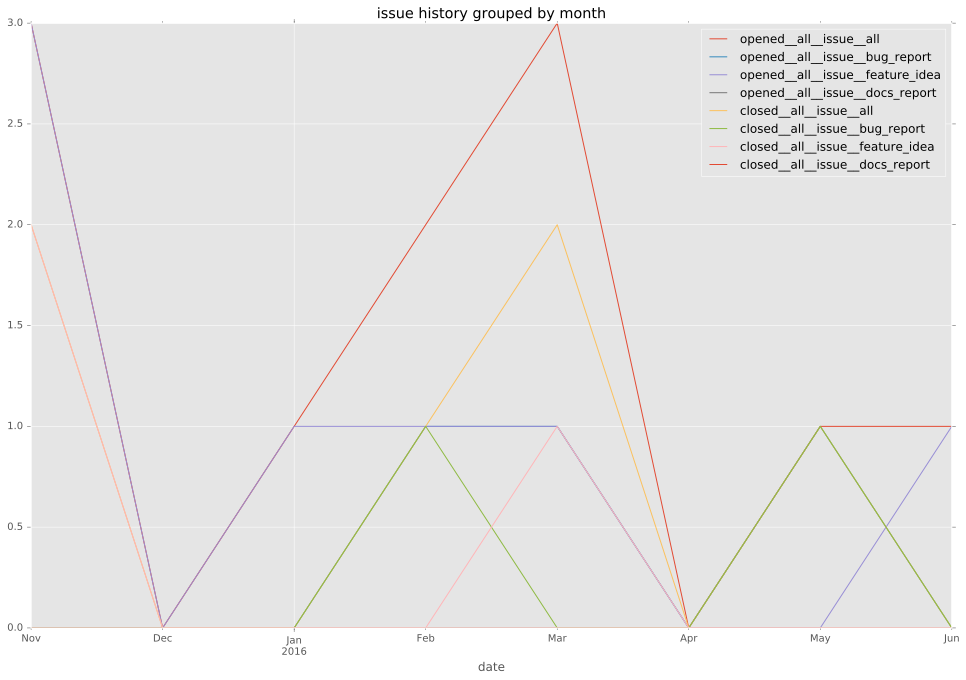
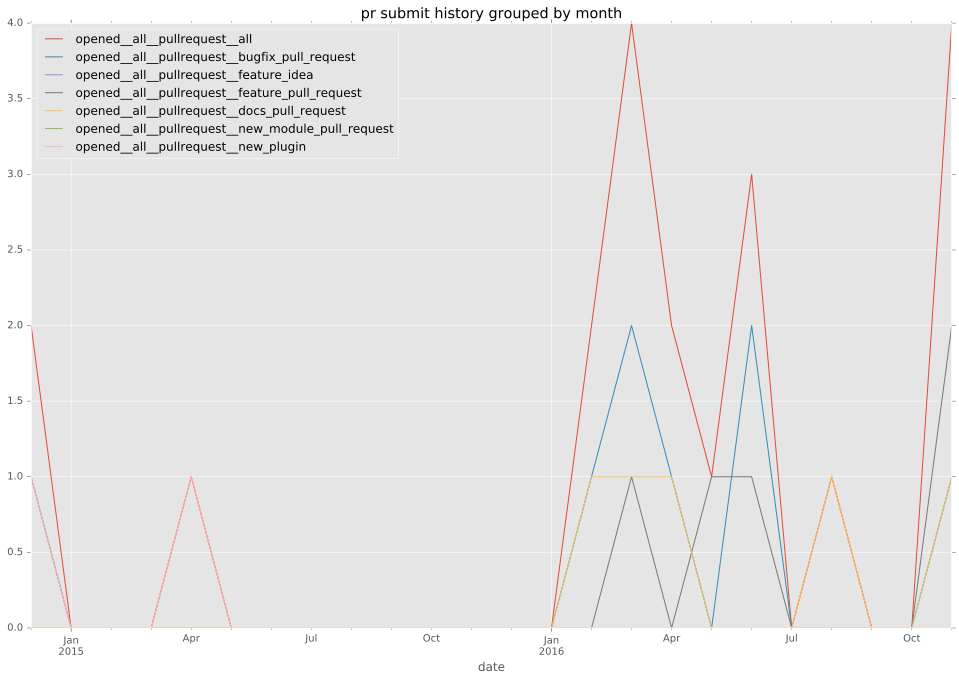
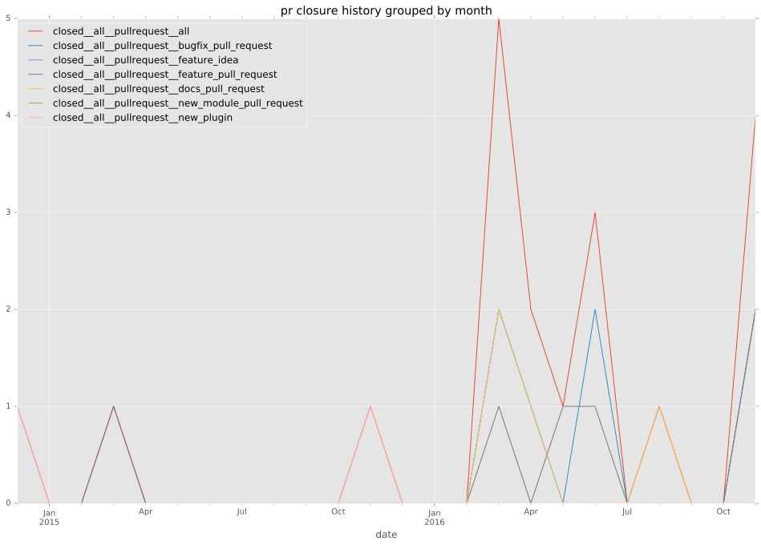

authors
- jtyr
maintainers
- jtyr
contributors
- jtyr : 134 commits
- resmo : 8 commits
- chris-l-weber : 4 commits
- bcoca : 2 commits
- mscherer : 1 commits
total issue counts
unknown: 1
bugfix pull request: 5
docs report: 1
pullrequest: 11
docs pull request: 2
feature pull request: 3
feature idea: 7
issue: 12
new plugin: 1
bug report: 3
issue history

pullrequest history


days open by issue type
feature pull request
count: 6
std: 0.516397779494
min: 0
max: 1
median: 1.0
mean: 0.666666666667
all
count: 29
std: 84.1446531878
min: 0
max: 266
median: 0.0
mean: 41.4137931034
pullrequest
count: 0
std: nan
min: nan
max: nan
median: nan
mean: nan
docs pull request
count: 4
std: 0.0
min: 0
max: 0
median: 0.0
mean: 0.0
docs report
count: 1
std: nan
min: 0
max: 0
median: 0.0
mean: 0.0
bugfix pull request
count: 7
std: 0.377964473009
min: 0
max: 1
median: 0.0
mean: 0.142857142857
feature idea
count: 6
std: 89.8242728888
min: 16
max: 266
median: 166.5
mean: 162.0
issue
count: 0
std: nan
min: nan
max: nan
median: nan
mean: nan
new plugin
count: 1
std: nan
min: 224
max: 224
median: 224.0
mean: 224.0
bug report
count: 3
std: 0.0
min: 0
max: 0
median: 0.0
mean: 0.0
closures grouped by total days open